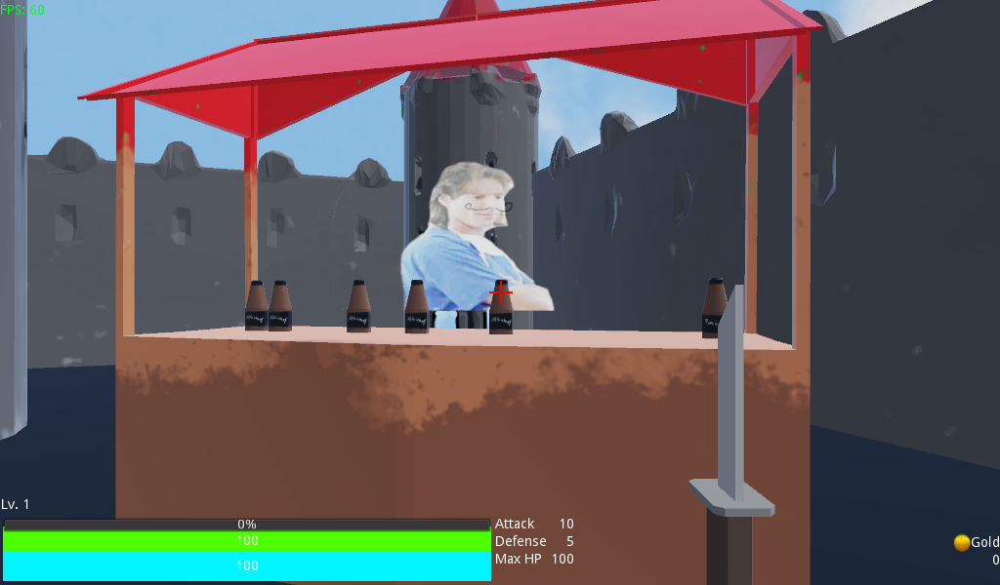
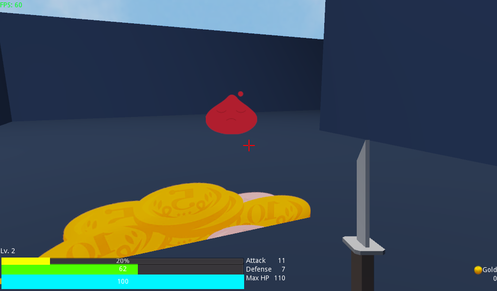
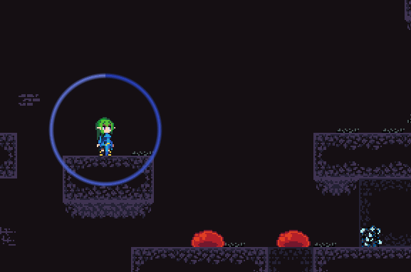

A... game? Made for Ludum Dare 46. It was created in one day by me and a friend on a whim, as a challenge. I did the "programming" and "design", and he did the music and "graphics" (more accurately, found stock photos). The real star here is my friend's endearingly scuffed performance of Gymnopédie No. 1 as the background music.
This "game" was made in Godot and functioned as my first actual project in Godot, though I already had a few months of messing around in the engine under my belt.
Honestly, it's more of an experience or an art piece than a game. The gameplay is somewhat indescribable.
Neverquest 6: a minimalistic singleplayer mmorpg - it's a game
Engine: Godot


A year after Second Layer, me and the same friend tried to make something a bit more serious. Well, it's not very serious at all in the end, but I can confidently call it a game, as the title might imply. Once again, I did the programming and design, and my friend handled the art and music. We got some extra help with the art and 3D models this time, too. The engine is once again Godot.
While the stock photo filled "artstyle" from Second Layer makes a partial return, this is a first person 3D dungeon crawler game. While lots of objects are still billboarding sprites, most of the 3D models were made during the jam! The gameplay is very simple but there is an actual progression system implemented, changing the enemies in the dungeons and the dialogue of the NPCs.
Spellunker
Engine: Godot

Our third Ludum Dare game! This time, armed with the strength of four people, there's something that looks presentable! I did the large majority of the programming (with the notable exception of the level generation code), but design was a fast-paced team effort. The pretty graphics are thanks to a dedicated artist now present in the team.
The gameplay this time around is a fast paced action platformer with a very mobile main character. Unlike most other platformers, progression here requires the player to continue falling down a bottomless pit. While somewhat rough around the edges, flying around the levels defeating enemies ended up being quite fun!
Spellunker has an itch.io page as well, where the game can be enjoyed right in the browser! No download needed!
This project was quite liked by the development team, and as such it is currently still being developed into a full game! Hopefully one day it will be featured on the Steam storefront.
Dracula's Tank Rampage
Engine: Game Maker Studio
One of my first game development projects, from my early teenage years. A NES-style platformer, from the time when NES-style platformers were in the vogue. While I was the main programmer, I had help from a number of incredibly talented sprite artists, leading to the in my opinion gorgeous looking NES visuals.
While the project reached a proof of concept stage, with a small level being designed, with a number of varied enemies and lots of weapons for the player to use, dwindling interest and lack of free time led to a complete stop in development.
Maybe one day, Dracula will get to act out his tank rampage.